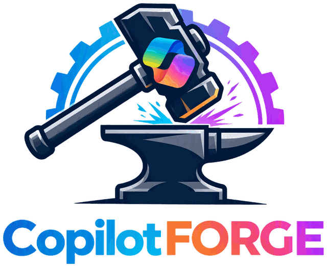

Build your Microsoft AI capability.
Open-source agents, skills, playbooks and templates for adopting, governing and delivering Microsoft AI, from first Copilot rollout to enterprise AI Centre of Excellence.
Departments
The organisation a Microsoft AI transformation needs, from strategy and adoption to delivery, assurance and operations. All 27 have first-draft skills.
Skills
Practitioner judgement with explicit triggers, inputs, outputs, reviewer gates, failure modes and Starter, Scale and Enterprise notes.
Programmes
Flagship programmes, from Copilot adoption and Champions to an AI Centre of Excellence and the full AI transformation.
Templates
Human-usable documents that turn advice into deliverables, with unknowns marked rather than invented.
Three connected journeys
Adopt AI
Help people use Microsoft Copilot effectively and responsibly: readiness, role-based scenarios, communications, learning, Champions, support and adoption measures.
Build with AI
Design and deliver agents, Cowork work designs, Copilot Code builds, Copilot Studio solutions and Microsoft Foundry solutions, including third-party models available through Microsoft.
Scale AI
Establish governance, an AI Centre of Excellence, an opportunity pipeline, review gates, a solution inventory and measurable value.
The capability map
Organised around what the organisation needs to do, not around a list of products. You do not need to know which Microsoft AI product you need before CopilotForge can help.
Build
Govern
Measure
Search every department and skill
How it works
- Describe your organisation. The programme builder creates a profile in your browser: size, sector, Microsoft estate, current AI use, governance, adoption and constraints. Nothing is sent anywhere.
- Get a recommendation you can check. The profile is matched to an edition (Starter, Scale or Enterprise) and a maturity archetype, and each recommendation names the rule that produced it.
- Ask for the pack. In Microsoft Copilot Cowork, attach the profile and ask: "Design our Microsoft AI programme." The departments produce a coherent transformation pack: assessment, operating model, adoption and Champions programmes, CoE, opportunity process, agent-delivery route, governance, roadmap, ownership map and success measures.
Use it in Microsoft Copilot Cowork
- Download the departments you need from the downloads page: one plugin per department, each named
copilotforge-<department>. - Upload them in Cowork: Customize > Plugins > Upload plugin, and share with your team.
- Add the suggested custom instructions, then ask your questions. The Copilot Cowork guide has the details.
Proportionate at every scale
Starter
Small organisation or a department beginning adoption.
Scale
Mid-sized organisation, or adoption expanding beyond pilots.
Enterprise
Large or multi-business-unit organisation.
Governance rises with impact, reach, data sensitivity and autonomy, through five progressive risk tiers. A personal prompt pattern and a customer-facing production agent do not pass through the same gates.
Principles
- Outcome before technology. The first decision is whether AI is appropriate at all.
- Business-owned, AI-enabled. The business owns priorities, knowledge, outcomes, adoption and value; AI and IT teams enable.
- Evidence over attendance. Champions are recognised for demonstrated capability and contribution.
- Knowledge is infrastructure. Reliable AI depends on owned, current, classified knowledge.
- Current facts come from sources. Availability, licensing and limits are cited from Microsoft sources, never asserted from memory.
- Human accountability stays explicit. AI assists; people remain accountable for outcomes.
Use it freely, credit the author
CopilotForge is free to use, including commercially and on client work. Content is licensed under CC BY 4.0 and code under MIT. When you share or adapt it, credit the author:
"CopilotForge" by Simon Foote (https://github.com/SimonFoote-greensparx/CopilotForge), licensed under CC BY 4.0 (https://creativecommons.org/licenses/by/4.0/).
The source of every skill, programme, template and script is on GitHub: https://github.com/SimonFoote-greensparx/CopilotForge.
Documents you complete for your own organisation from the templates need no credit. The credit page has the full wording. Created by Simon Foote, with thanks to our contributors.
Independence
CopilotForge is an independent community project focused on Microsoft AI. It is not affiliated with, endorsed by or sponsored by Microsoft. Microsoft, Microsoft 365, Copilot, Copilot Studio, Microsoft Foundry and related names are trademarks of the Microsoft group of companies. Nothing here is legal, licensing or data-protection advice.